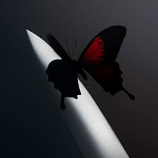

Written by: Connor Pangle

After a long wait of three years since his last release of "Hollywoods Bleeding" I've been very excited to hear whats in store on this next project. While the last project wasn't bad, it didn't live up to the celebration of "Beerbongs & Bentleys". The new album is titled "24k Toothache" and carries with it a total of 14 songs with 6 features. The first thing that stood out to me was that this project feels more personal and introspective than his last, none of the features are extremley promident and give room for Austin to really express his feelings and ideas across the tracks. Each song is refined and engages the listener into a story on each track. So far my most favorite is his opening track Reputation since I love how it starts the listener on the journey the rest of the project will guide them on.
| Album | Year |
|---|---|
| Twelve Carat Toothache | 2022 |
| Hollywoods Bleeding | 2019 |
| Beerbongs & Bentleys | 2018 |
| Stoney | 2016 |
Written by: Connor Pangle
Today we take a deep dive on the newest emerging genre trend that really began to blowup during 2020. The genre is titled Hyper-Pop for the reason of using up beat melodies but then tweaking, crushing, and re-defining them into a more glitchy and experimental sound. When first finding out about artists such as 100 Gecs or Glaive the first thing you'll notice are these off the wall new and refreshing beats and sounds that acompany them. I think this is the major draw to the artists, it offers listeners with something they've never heard before which can be very excited. It's also a genre that I feel is either you love it or you hate it, the sounds can be harsh and a hard listen depending on the artist or the listener. I still think its a great genre to give a try since it really offers a new type of music thats pioneering cool new sounds.